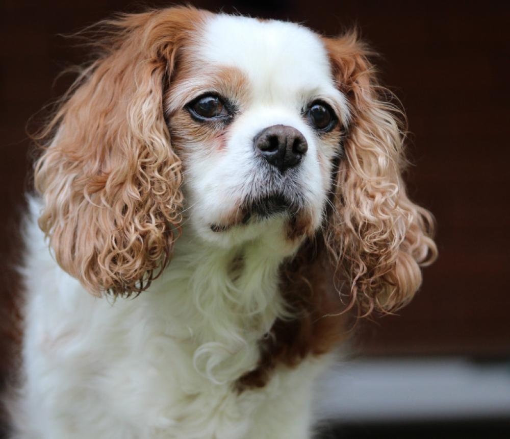
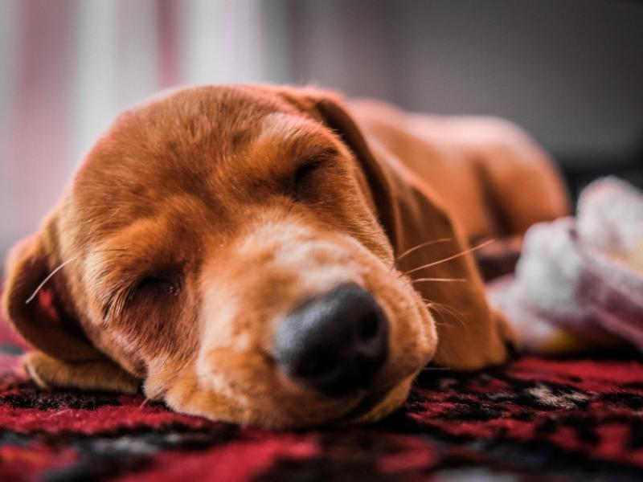
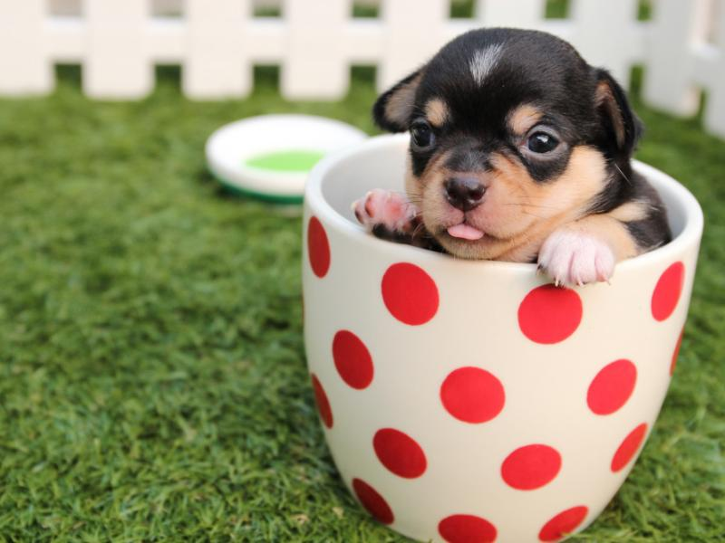
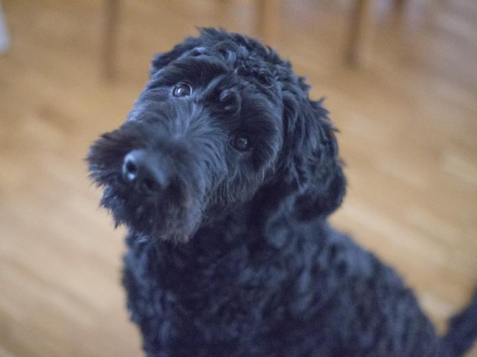
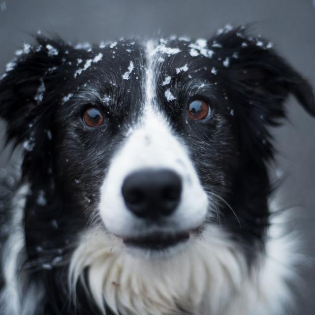

CROWDFUNDING
いま、保護犬たちに
いま、保護犬たちに
力を貸してください。
立ち上げの第一歩を、クラウドファンディングで進めています。あなたの応援が、施設の準備と、救える命の数になります。
施設準備費保護犬の受入準備初期医療費備品・衛生環境広報・コンテンツ制作
一度きりの善意に頼らない。寄付・買い物・視聴・参加――
日常の選択が、保護犬を支え続ける仕組みをつくります。

現場では、日々の飼養費・医療費・施設維持費・人件費・譲渡前ケア・広報費など、絶え間ない資金と人の負担が発生します。一方で「支援したい気持ち」はあっても、参加のハードルが高いのが実情です。
何をすれば支援になるのか分かりにくい（不透明な手段）
寄付先が見えにくい（不透明な行き先）
継続支援の仕組みが弱い（単発で終わる）
企業や店舗が参加しづらい（高額協賛のみ）
わんステは、「寄付」「お買い物」「視聴」「企業協力」のすべてを“支援の導線”に変える仕組みとして設計します。
保護犬支援を、特別な行為ではなく
“日常の選択”に変える。
施設も「閉じた保護所」ではなく、地域・支援者・企業・来場者がつながる“保護犬支援ステーション”として設計します。
保護から譲渡、医療、地域連携まで。ひとつの拠点に、保護犬を支える機能を集約します。
保健所等から引き取った保護犬を店舗で飼育・展示。来店者が触れ合いながら正式譲渡へ。社会化トレーニングや面談・手続きも拠点で完結します。
NPO本部が保健所・愛護センターとの窓口を一元管理。各拠点が最寄りの「引き取りの受け皿」として機能し、命のつなぎ先を広げます。
ドナー犬の登録・マッチング情報を本部が管理し、提携動物病院の輸血医療につなぐ。法に沿った適切な主体で、救える命を増やします。
ペット不可住宅の方や、一時的に犬と過ごしたい方へ。社会化済み・健康管理された保護犬とのお散歩や撮影。里親候補のお試し機会にも。
安全なフリー触れ合いエリアと、衣装・背景・照明を備えた撮影スタジオ。手ぶらで来て本格的な記念写真を。楽しさが支援につながります。
来て、触れて、楽しむ。その一歩一歩が、保護犬の暮らしを支えます。

季節の衣装・背景・小道具を完備。プレミアム会員やドナー犬には特典料金も。

屋外運動・社会化・譲渡前の状態確認も兼ねた、管理しやすい安全なランを併設。

柵で区切られた安全なゾーン。アレルギー配慮の観覧エリアも検討しています。
続けて支える人に、続けて応える。会員費は保護活動の安定した原資になります。
献血で命を救う大型犬を「ヒーロー」として認定・表彰。健康管理はNPOがサポートし、本人はカフェ・撮影を特典価格で。

集まった支援は、すべてNPO法人が集約。使途を厳格に区分し、年次報告で公開します。
会員費・寄付・クラウドファンディング・物販・協賛・カフェ収益。
NPO法人が一元管理。使途を区分し、活動報告書で全公開。
飼育・医療費、保健所連携、施設維持、血液バンク整備、啓発・里親活動へ。
保護犬が家族へ。医療が届く。支援が地域で循環していく。
立ち上げの第一歩を、クラウドファンディングで進めています。あなたの応援が、施設の準備と、救える命の数になります。
支援・協賛・取材・FC加盟など、どなたでもお気軽にご連絡ください。